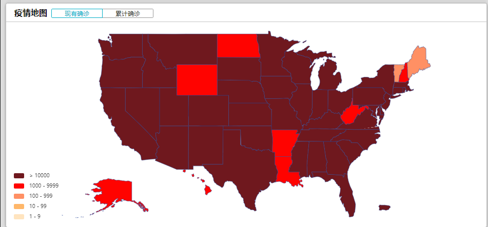
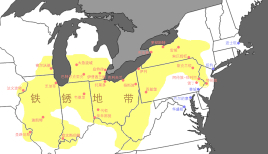

收录于合集

作品简介
【作者】 邵良：国政学人评论员，硕士毕业于中国人民大学
【编辑】 陈旻雨
正文
01
引子
美国时间1月6日，依照往年惯例，美国国会参议院将认证拜登当选下一任总统的选举人团投票结果。然而，当天下午，国会山门口出现了数百名特朗普支持者，他们在与武装警察拉锯90分钟后成功冲破封锁线，涌入国会山，致使众多国会议员狼狈逃窜，认证程序也不得不临时中断。这是自1812年英军攻陷华盛顿以来,美国国会山首次被暴力占领。
图为美国时间2021年1月6日，
成百上千的“川粉”冲击美国国会山
这一两百余年难得一见的稀罕事表明，2020年的选举并没有改变美国国内剑拔弩张的紧张局势。时代周刊有一句话恰到好处地总结了这一紧张局势背后的社会问题：即便拜登获胜，他领导的也是特朗普统治的美国（Even If Joe Biden Wins, He Will Govern in Donald Trump’s America）。
具体来说，在2020年美国总统选举背后，是美国社会自南北战争以来前所未有的巨大分裂。这种巨大分裂在选票统计数据上就可见一斑：据BBC新闻报道，本次美国总统选举的投票率是自1900年以来最高的一次，粗略估计达到了66.9%。其中拜登赢得了超过8000万张选票，成为有史以来获得选票最多的美国总统候选人。而与之旗鼓相当的特朗普也赢得了近7400万张选票，成为了有史以来获得选票第二多的美国总统候选人。
美国如此巨大的社会分裂是怎么产生的？新总统拜登能否如其胜选宣言中所说，“让美国再次被全世界尊重，并且实现国内的团结”（To make America respected around the world again and to unite us here at home）？这些对美国的未来、乃至全人类的未来影响深远的问题，亟需国际政治学者予以解答。
探寻美国社会分裂的深层原因，以及拜登能否弥合美国的社会分裂，有两个关键切入点：一是为什么拜登能够击败特朗普。二是还有谁在支持特朗普，他的力量为什么这么大。
02
为什么拜登能够击败特朗普？
特朗普处理新冠疫情的无能以及因此引发的经济衰退，无疑是特朗普此次选举败走麦城的主要原因。

图为2020年10月30日美国各州新冠疫情地图。
（图片来源：wind金融终端）
哈佛大学国际关系教授斯蒂芬·马丁·沃尔特（Stephen Martin Walt）毫不留情地指出， “面临突如其来的公共卫生紧急状况和严重经济危机，特朗普所表现出的安慰、团结、激励或治理能力为零。”他还指出，正是特朗普应对疫情的无能，造成数以千万计的美国人失业。美国著名经济学家約瑟夫·斯蒂格利茨 (Joseph E. Stiglitz)也评论说，特朗普应对疫情的政策是彻头彻尾的失败，美国对疫情的管控 “就像一个第三世界国家，公共社会保障体系已不起作用”。
图为哈佛大学肯尼迪政府学院
国际关系教授斯蒂芬·马丁·沃尔特（Stephen Martin Walt）
图为美国著名经济学家
約瑟夫·斯蒂格利茨 (Joseph E. Stiglitz)
新冠疫情的流行导致了特朗普民调支持率的断崖式下跌。盖洛普的民调数据表明，特朗普的支持率在夏季疫情爆发期一度跌至38%。与此相对，拜登的竞选团队很好利用了特朗普应对疫情的无能。皮尤民调公司的民调数据显示，民众对拜登与特朗普两者处理疫情能力的信心，前者比后者领先17个百分点。
03
**
**
谁在支持特朗普？
他的力量为什么这么大？
特朗普应对疫情的无能，以及由此引发的经济衰退，并没有使得他在选举中一败涂地。将近7400万张投给他的选票表明，有必要探讨一下谁在支持特朗普、他的力量为什么这么大。
少数族裔、移民以及“身份政治”引发的价值观冲突，为特朗普提供了一大支持者群体，即文化保守主义者和基督教民族主义者。南京大学政治学教授祁玲玲指出，2016年美国大选背后的核心问题在于“政治正确”与“反政治正确”之间的价值观冲突，主要表现在意识形态、种族问题以及多元文化主义等方面。一些海外学者（Tyler T. Reny；Nazita Lajevardi；Kate A. Ratliff；Andrew L Whitehead）的数据分析研究表明，持有种族保守态度和反移民态度的白人选民对特朗普情有独钟，而选民对穆斯林的怨恨、性别歧视以及基督教民族主义也对特朗普胜选起到了正面影响。正如美国康涅狄格大学社会学家露丝·布朗斯坦 (Ruth Braunstein)注意到的那样，特朗普在大选中频繁使用局外人（outsider）、敌人（enemies）以及他者（others）这类词汇描述宗教少数群体，进而有效地获得了排斥穆斯林的选民的支持。
图为“911”恐怖袭击事件现场照片
经济全球化带来的产业转移，为特朗普培养了另一个关键的支持者群体——白人工人阶级。这一群体是特朗普2016年得以入主白宫的关键力量。具体来说，因产业转移而导致经济状况恶化的“铁锈带”摇摆州白人工人阶级对特朗普2016年胜选起到了关键作用。美国约翰·霍普金斯大学社会学教授斯蒂芬·摩根(Stephen L. Morgan) 等人的统计分析显示，特朗普减税、去监管以及增加国防开支等传统共和党政策倾向只让他保住了共和党铁杆票仓，其胜利的关键在于白人工人阶级的支持。
图为美国约翰霍普金斯大学
社会学教授斯蒂芬·摩根(Stephen L. Morgan)
白人工人阶级之所以选择支持特朗普，是因为特朗普“把工作带回美国”的经济主张符合他们的利益诉求。北京大学美国史专家王希教授指出，随着经济全球化的不断加深以及美国“去工业化”进程的不断发展，美国中西部和南部各州的白人工人阶级群体遭受了就业和收入的重创。王希教授进一步指出，“特朗普将自己说成是‘被遗忘的’中下层白人的代言人，将中下层白人的痛苦归咎于‘建制派’政治精英对美国人的欺骗， 将全球化视为对美国利益的出卖和牺牲”，这就促使这些地区的白人工人阶级倒戈，不再支持民主党，转而支持特朗普。
美国人民群众对建制派政治精英和经济精英的大规模愤怒也是特朗普的力量源泉之一。哈佛大学教授斯蒂芬·马丁·沃尔特指出，美国的政治精英和经济精英近年来一心一意投机钻营，不再考虑如何满足更广泛的社会需求，而且他们很少被追究责任。沃尔特进一步指出，正是人民群众这种对精英背叛（elite betrayal）和对特权的更广泛认识，将特朗普和伯尼·桑德斯（Bernie Sanders）这两个原本不太可能在美国政坛上有所作为的边缘人物转变为强大的政治力量。
04
美国的社会分裂表现是什么？
造成美国社会分裂的深层原因是什么？
对上文对特朗普支持者的分析进行进一步探究，可以发现美国社会分裂的三种表现及其各自背后的深层原因。
其一就是文化价值观的分裂，所谓“政治正确”与“反政治正确”之间的价值观冲突引发的社会分裂。著名政治学者萨缪尔·亨廷顿（Samuel P. Huntington）在《谁是美国人：美国国民特性面临的挑战（Who Are We? The Challenges to America’s National Identity）》一书中指出，在二战结束之后不久，美国人普遍认同以盎格鲁-新教精神为核心的美国的传统信条(American Creed)。然而，自上世纪六十年代以来，多元文化主义者（multiculturalism）掀起的种种社会运动，挑战乃至一定程度上解构了美国的传统信条。在多元文化主义者看来，美国是不同种族、不同族群亚文化组成的马赛克，应该从法律、教育上用美国各个族群自身原生的历史文化价值观和特殊权益消解美国人在文化和信仰上的集体认同。然而，广大美国人民群众，甚至包括很多少数族裔成员，仍然深爱着美利坚民族主义，忠于美国建国300年来形成的传统信条和民族特性。这样一来，在“美国向何处去”、“谁是美国人”这类民族国家建构（nation building）核心问题上，少数多元文化主义煽动者及其追随者，和美国广大人民群众之间出现了文化价值观的分裂。
图为美国著名政治学者萨缪尔·亨廷顿
（Samuel P. Huntington）
其二则是经济地理上的分裂，即在经济全球化引发的产业升级和产业转移中的获利群体和受损群体之间的分裂。中国人民大学国际政治系副教授田野等人指出，“20 世纪 70 年代以来不断加深的经济全球化，在推动美国成为全球金融中心与科技霸主的同时，也加深了美国内部日益严重的收入不平等。”具体来说，“由非熟练和半熟练劳动力所集聚的地区(制造业带、城市外围区、小型城市) 在全球化中受到严重冲击，往往面临着较高的失业率、贫困率或较低的工资水平； 而那些由人力资本要素所集聚的地区(东西海岸、城市中心区、大型城市) 的情况相对较好， 是全球化的获利者。”“一方面， 美国制造业特别是传统制造业在全球化进程中走向衰退，大批工厂工人陷入收入困境与失业危机。……另一方面， 美国在高端服务业和先进制造业领域占据全球优势， 金融界人士、企业高管、科学家、工程师等在新自由主义全球化浪潮中变得愈发富有。”

图为在经济全球化中受到严重冲击的
美国铁锈地带（Rust Belt）
这一现象背后是资本主义不断自我革命的本质特征。随着资本主义的不断发展，新的行业不断产生，旧的行业不断淘汰、转移，进而引发所谓产业上的“降维打击”。而劳动者的知识技能相对于行业的新陈代谢有一定的滞后性，很多人在掌握新行业所需的知识技能以前，其原本所从事的行业就已经淘汰或被转移到国外了。正是这部分人成为了特朗普反全球化运动的主力大军。
其三则是民众-精英之间的分裂。美国著名政治学家弗朗西斯·福山（Francis Fukuyama）指出，当下的美国正处在政治衰败（decay）中。具体来说，美国政界出现的严重的精英背叛的原因，是政治精英不愿与自身背后的利益集团（interest group）切割，因此很难落实各项旨在满足更广泛社会需求的改革措施。对此，著名学者任剑涛教授认为，权贵集团自身，或与之构成利益共同体的政治、经济精英，不会进行任何可能触动权贵集团利益蛋糕的改革。而不属于权贵集团的人民群众，虽然早已怒火中烧，但只能对权贵集团进行阿Q式的谩骂指责，没有能力将改革进一步推进。任剑涛教授进一步指出，已经出离愤怒的人民群众只能寄希望于“那些掌权前不属于、至少自认为不属于权贵集团成员，但却在意外的情况下掌握了国家最高行政权力并有志于再造国家的人”。“特朗普似乎正是这样的人。……特朗普在出任总统的就职演讲中， 便丝毫不留情面地抨击了华盛顿的政治家群体。……这样的批评大概只能出自像特朗普和桑德斯那样的另类政客之口， 因为他们长期处在美国政治权力的核心圈之外， 同时又对这个圈子的权力游戏方式感到非常不满， 因此发愿进行彻底的改革。”
图为美国时间2017年1月20日
美国新当选总统特朗普进行就职演讲
05
拜登能否解决美国的社会分裂？
新总统拜登能否解决美国的分裂，尚须时间来证明。但是根据拜登胜选演讲的文本可以推断，他已经认识到美国的社会分裂是一项迫在眉睫的紧要问题。拜登在胜选演讲中提出针对性的解决方案主要是重建中产阶级、打造充满机会的美国，用保守派（Conservatives）可以接受的机会平等、美国梦，弥合文化价值观、经济地理以及精英背叛所引发的社会分裂。
图为美国东部时间11月7日20:00左右，
拜登以新当选总统身份发表胜选演讲
拜登的胜选演讲体现了美国自由派（Liberals）政治精英在解决社会公平正义问题上由“结果平等”（资源分配的结果人人平等）向“机会平等”（通过个人奋斗获得资源的机会人人平等）的范式转变。
前特朗普时期美国自由派推动社会公平正义所使用的主要手段是身份政治，以煽动不同亚文化（subculture）群体集体抗争的方式追求社会资源分配结果的平等。其必然后果就是社会各个亚文化群体之间的界限更为分明，不同亚文化群体之间因为集体利益的差异而彼此仇恨，导致福山在《反对身份政治：新部落主义与民主的危机（Against Identity Politics: The New Tribalism and the Crisis of Democracy）》一文中所说的新部落主义与民主的危机。
与此相对，在机会平等的范式下，社会资源的分配将更重视个人的后天努力而非先天的亚文化群体认同。这将会降低亚文化群体认同在资源分配上的重要性，显然有助于淡化不同亚文化群体之间鲜明的界限，最终有利于实现政治整合（political integration）、形成国家认同（national identification）。
参考文献
【1】祁玲玲.选举政治的逻辑——美国反政治正确的归因分析[J].世界经济与政治,2017(10):67-89+157-158.
【2】任剑涛.重构国家:特朗普理念的政治理论推定[J].当代美国评论,2020,4(03):48-76+124-125.
【3】田野,赵莉.全球化如何塑造美国右翼民粹主义的选民基础:一种选举地理的视角[J].当代美国评论,2020,4(03):77-102+125.
【4】王希.特朗普为何当选?——对2016年美国总统大选的历史反思[J].美国研究,2017,31(03):9-29+5.
【5】演讲局.演讲局成员、诺奖得主约瑟夫·斯蒂格利茨专访:特朗普在向全球经济扔手榴弹[Z]. https://user.guancha.cn/main/content?id=172163&s=fwzxfbbt
【6】Braunstein, Ruth, “Muslims as Outsiders, Enemies, and Others: The 2016 Presidential Election and the Politics of Religious Exclusion, " American Journal of Cultural Sociology, Vol. 5, No. 3, 2017, pp. 355-372.
【7】Fukuyama, Francis, “America in Decay: The Sources of Political Dysfunction, “Foreign Affairs, September/October, 2014.
【8】Fukuyama, Francis, “Against Identity Politics: The New Tribalism and the Crisis of Democracy,” Foreign Affairs , September/October, 2018.
【9】Huntington, Samuel P., Who Are We? The Challenges to America’s National Identity. New York: Simon and Schuster, 2004.
【10】Lajevardi, Nazita, Marisa Abrajano, “How Negative Sentiment toward Muslim Americans Predicts Support for Trump in the 2016 Presidential Election,” The Journal of Politics , Vol. 81, No. 1, 2019, pp. 296-302.
【11】Morgan, Stephen L., Jiwon Lee, “Trump Voters and the White Working Class,” Sociological Science, Vol. 5, No. 10, 2018, pp. 234-245.
【12】Ratliff, Kate A. et al., “Engendering Support: Hostile Sexism Predicts Voting for Donald Trump over Hillary Clinton in the 2016 US Presidential Election,” Group Processes & Intergroup Relations, Vol. 22, No. 4, 2019, pp. 578-593.
【13】Reny, Tyler T. et al., “Vote Switching in the 2016 Election: How Racial and Immigration Attitudes, Not Economics, Explain Shifts in White Voting,” Public Opinion Quarterly , Vol. 83, No. 1, 2019, pp. 91-113.
【14】Walt, Stephen Martin, “The World’s Weakest Strongman Donald Trump’s use of violence and division isn’t a symbol of authority—it’s a sign of desperation,” Foreign Policy , June, 2020.
https://foreignpolicy.com/2020/06/06/trump-violence-george-floyd-protests- coronavirus-pandemic/
【15】Wimmer, Andreas, Nation building: Why some countries come together while others fall apart. Princeton University Press, 2017.
【16】Whitehead, Andrew L. et al., “Make America Christian Again: Christian Nationalism and Voting for Donald Trump in the 2016 Presidential Election,” Sociology of Religion , Vol. 79, No. 2, 2018, pp. 147-171.
文章观点不代表本平台观点

国政学人
支持学术公益与知识传播
微信扫一扫赞赏作者 __赞赏
已喜欢，对作者说句悄悄话
取消 __
发送给作者
发送
最多40字，当前共字
上一页 1/3 下一页
长按二维码向我转账
支持学术公益与知识传播
受苹果公司新规定影响，微信 iOS 版的赞赏功能被关闭，可通过二维码转账支持公众号。